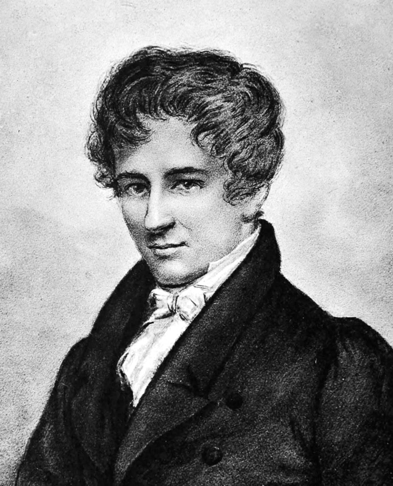
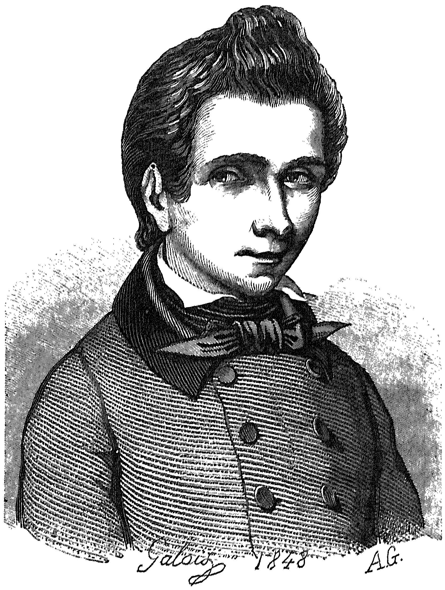
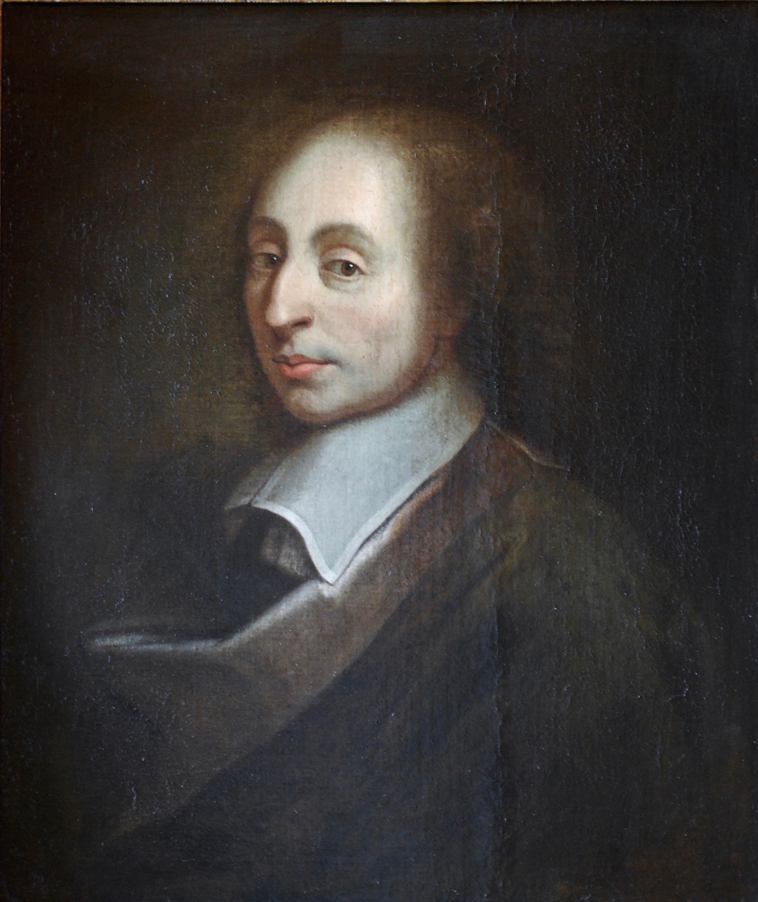

Niels Henrik Abel
1802–1829 (died at 26)
Solved a 300-year-old mathematical mystery before he turned 20, and died in poverty two days before his big break arrived.
Read more
Born into poverty in Norway, Abel showed extraordinary talent early but faced constant financial hardship throughout his short life. At just 19, he proved that there is no general algebraic formula for solving fifth-degree (quintic) equations — a problem mathematicians had struggled with for centuries. Despite this breakthrough, his work was largely ignored by the mathematical establishment during his lifetime, and he was repeatedly denied academic positions. He died of tuberculosis at 26, only two days before a letter arrived offering him a professorship in Berlin. Today, Abel's work forms a cornerstone of modern algebra, and the prestigious Abel Prize — mathematics' equivalent of the Nobel Prize — was established in his honor.
Evariste Galois
1811–1832 (died at 20)
Spent his final night racing to write down a lifetime of ideas, before dying in a duel the next morning.
Read more
A fiery and politically active French mathematician, Galois developed revolutionary ideas about the structure of equations while still a teenager, though his work was repeatedly rejected or lost by the academic institutions of his time. Deeply involved in the political turmoil of post-revolutionary France, he was imprisoned more than once for his radical views. At just 20, he was killed in a duel under mysterious and disputed circumstances — the night before, convinced he would die, he stayed up writing down as much of his mathematical work as he could, famously scrawling "I have no time" in the margins. That single night's work laid the foundation for group theory, a field now essential to modern algebra, cryptography, and particle physics.
Bernhard Riemann
1826–1866 (died at 39)
Left behind a math problem so hard, it still carries a million-dollar bounty over 150 years later.
Read more
The son of a poor Lutheran pastor in Germany, Riemann initially studied theology before switching to mathematics, where he quickly proved himself one of the most original thinkers of his generation. His work reshaped geometry, laying groundwork later used by Einstein in general relativity, and introduced the (in)famous Riemann Hypothesis — a conjecture about the distribution of prime numbers that remains unsolved to this day, with a million-dollar prize still waiting for anyone who can prove it. Riemann suffered from poor health for most of his life and died of tuberculosis at 39 while traveling in Italy. His ideas continue to influence fields far beyond pure mathematics, from cryptography to theoretical physics.
Blaise Pascal
1623–1662 (died at 39)
Built a working calculator as a teenager, then spent his final years debating the existence of God.
Read more
A French polymath, Pascal was a mathematical prodigy who built one of the first mechanical calculators as a teenager to help his father with tedious tax computations. He made major contributions to probability theory, geometry, and what would become known as Pascal's Triangle, a tool still taught in classrooms today. In his later years, Pascal turned increasingly toward philosophy and religious writing following a profound spiritual experience, producing the famous "Pascal's Wager" argument for belief in God. Chronic illness plagued him throughout his life, and he died at 39, his body weakened by years of poor health. His dual legacy — as both a founding figure of probability theory and a significant philosophical writer — remains rare among mathematicians.
Srinivasa Ramanujan
1887–1920 (died at 32)
Taught himself math from one battered old textbook and stunned the world's top mathematicians with results they couldn't even prove.
Read more
Born in a small town in India with almost no formal mathematical training, Ramanujan taught himself advanced mathematics from a single outdated textbook and began producing original results in near-total isolation. In 1913, he sent a letter filled with his theorems to British mathematician G. H. Hardy, who recognized their brilliance and brought him to Cambridge. Over the following years, Ramanujan compiled nearly 3,900 of results in number theory and infinite series, many stated without formal proof yet later confirmed to be correct — some are still being verified and applied today. The harsh English climate and wartime food shortages took a severe toll on his health, and he returned to India, dying of illness at just 32. His notebooks continue to yield new mathematical insights over a century later.
Ada Lovelace
1815–1852 (died at 36)
Wrote the world's first computer program over a century before computers existed.